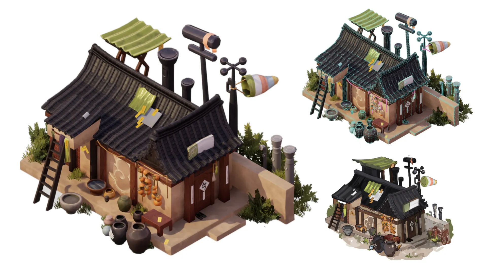
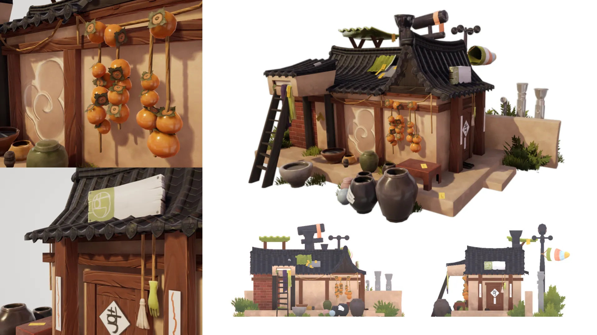
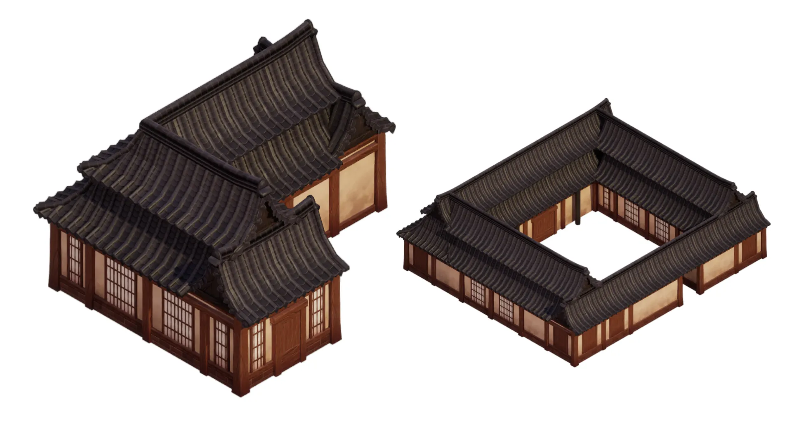
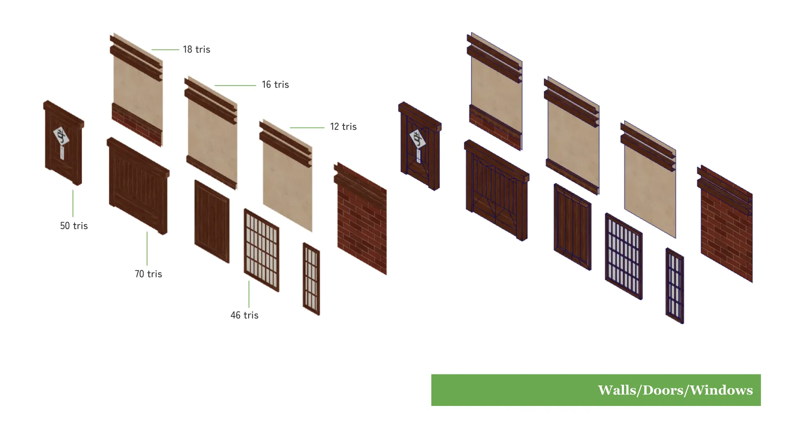
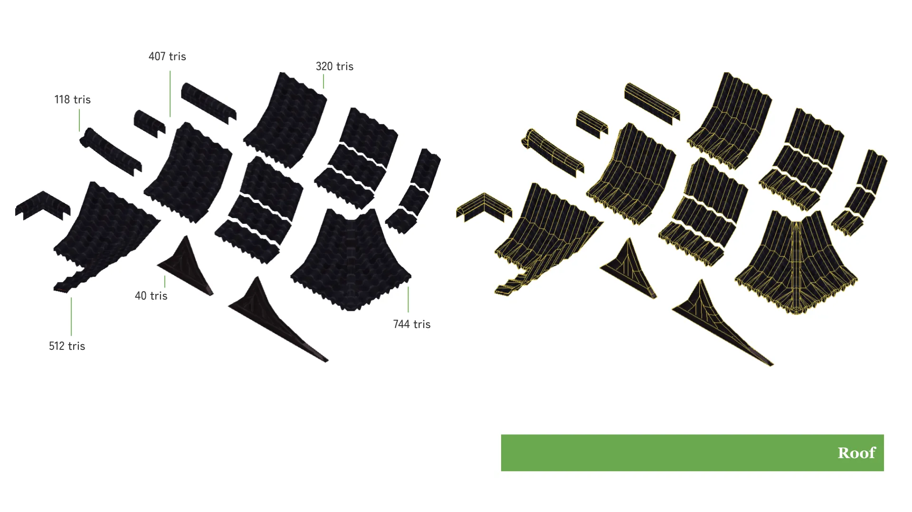
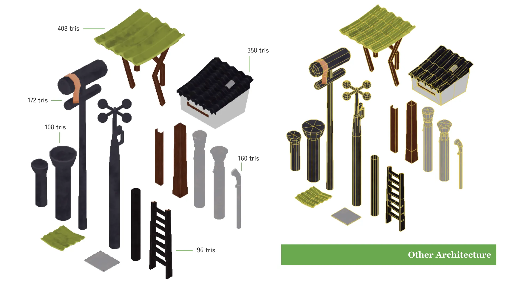
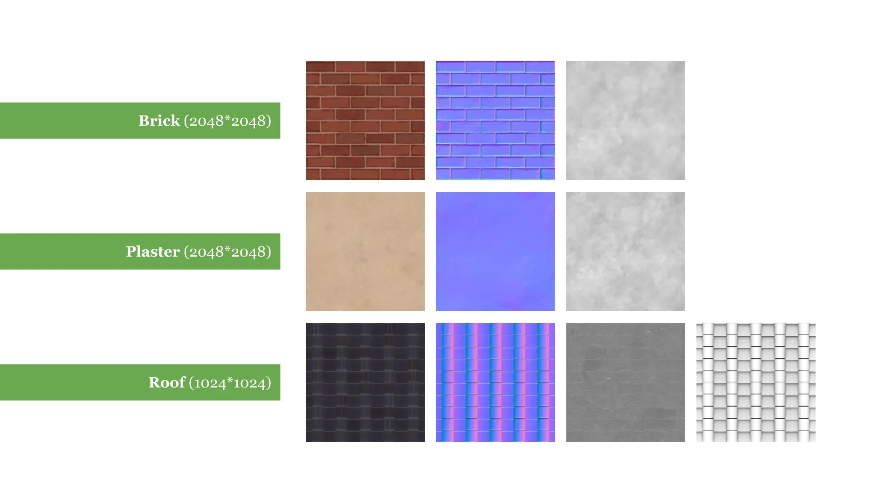
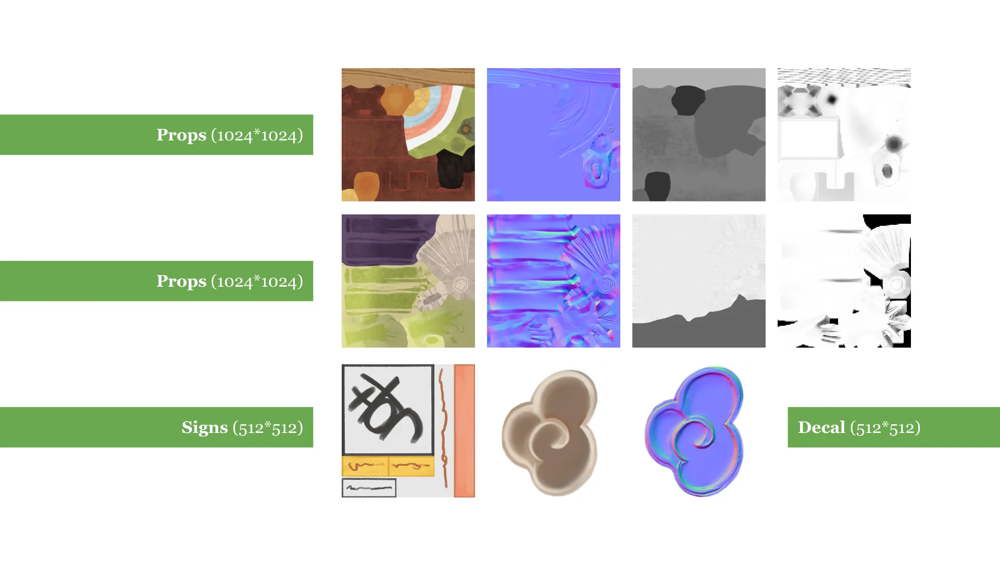

Modular Hanok Kitset
A stylized PBR low-poly modular hanok kitset based on the concept art of Abi Warwick (ajihaew) from the Honcheon Recoil visual development project. Adjustments from the concept art were made from additional sketches by the concept artist (such as the green sunroof and the style of the door). Aside from that, I also made sizing adjustments so it could be more standardized for creating modular buildings. The final render was created in Unreal Engine 4. I used custom shaders to add world-based dirt on the walls for variation.
 Two other examples of modular buildings which can be easily created with grid snapping.
Due to the number of objects involved, it's difficult to list polycounts for each item so only a few key items have tris listed. Overall, it's low-poly both to accomodate the simple style and that the objects need to be duplicated many times.
    